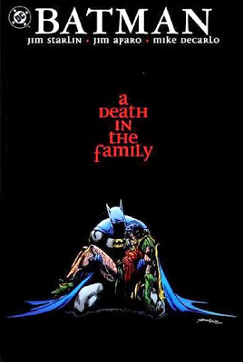

The best Batman comics
- Batman: The Dark Knight Returns
- Batman The long Halloween
- Batman a death in the family
Batman: The Dark Knight Returns

First edition: February to June 1986
Editorial: DC Comics
Editor: Dennis O'Neil
N°. of pages: 184
Bruce Wayne, now 55 years old, comes out of retirement to put on his cape. As Batman, he too fights his old enemies one last time before an old ally arrives looking for one last fight.
The Return of the Dark Knight, like the compilation of the four volumes, tells how 10 years have passed since Bruce Wayne, old and tired, decided to retire from his life as a superhero (particularly, due to the death of his former pupil Jason Todd. ). As part of his new hobbies, Wayne becomes an alcoholic who likes to participate in dangerous car races for fun. At the beginning of the story, Bruce can be seen financing the facial reconstruction of Harvey Dent / Two Face in hopes of "defeating his demons". Eventually, Bruce begins to be haunted by his old nightmares (his fall into the cave and the death of his parents) when he is watching a Zorro movie at home (the movie his parents took him to see the night in the one who were killed) and see on the news that crime in Gotham is worse than ever.
Batman The long Halloween

First edition:
Editorial:
Editor:
N°. of pages:
District Attorney Harvey Dent is increasingly obsessed with ending the gangs and corruption that rule the city once and for all. In turn, Lieutenant Jim Gordon continues with his work of cleaning up the police force and his attempts to enforce the law. And finally, Batman stands firm in his personal fight against the injustice and crime that haunts Gotham City. These three characters sign a pact to end the mafias, especially with the powerful Carmine "El Romano" Falcone.
Batman a death in the family

First edition:
Editorial:
Editor:
N°. of pages:
To get inside a bit, Dick Grayson (Robin) grew up and became independent from Batman, calling himself "Nightwing." Then Jason Todd (second Robin) appeared who was killed by Joker in this story